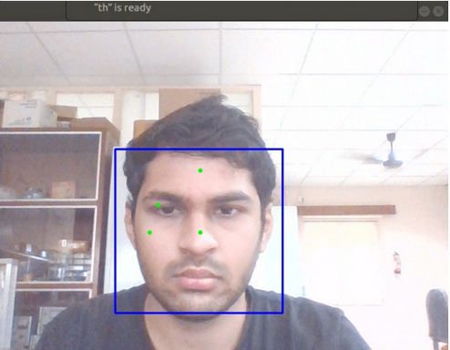
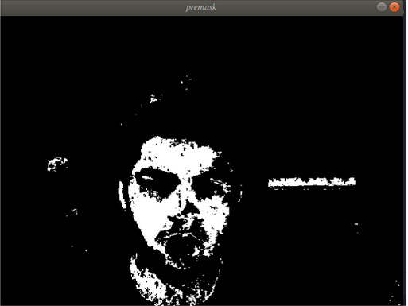
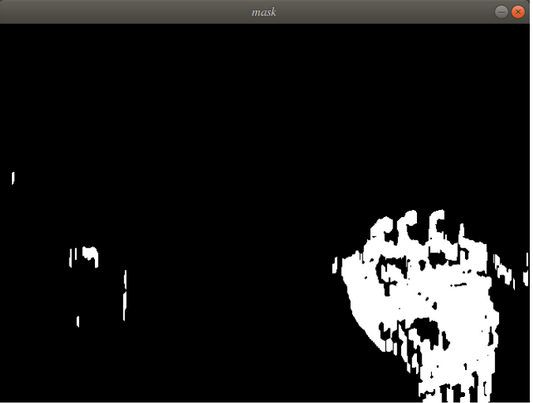
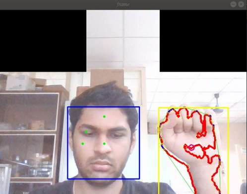

The objective of the work is to develop a system to aid speech or hearing impaired people to communicate with others by translating American Sign language into text and vice versa in real-time. I worked on developing the deep learning architecture for ASL Fingerspelling using image datasets. To perform background subtraction, I used Haar-Cascade Face Detection Algorithm to extract skin color from four distinct points, and used it as a mask to localize the position of hands in the incoming video feed. After this, morphological transforms were applied to the resulting image frame. For the network architecture I used a combination of Google Inception and YOLO architecture in Keras, with lesser convolutional layers and more pooling and normalization layers. Achieved a validation accuracy of 84%. Below are two tests, one in clear and the other in more complex backgrounds